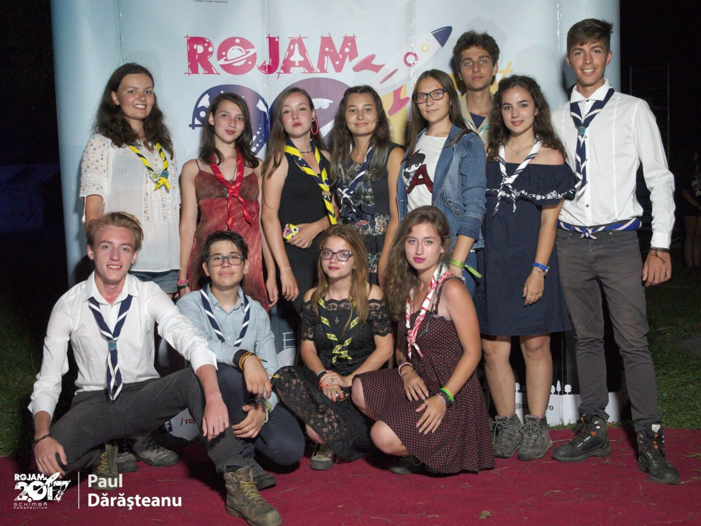

Cabana la RoJam 2.0 17

4.08.2017 – data care a marcat începerea celui mai mare eveniment cercetășesc din ultimii 4 ani în România: Jamboreea Națională. Am așteptat cu nerăbdare acest eveniment mai ales din cauza promovării care a început cu un an înainte. Văzând atelierele şi programul pe micul ecran de acasă, așteptarea devenea din ce în ce mai grea.
Până să ajungem în Cristian, am schimbat trenul în Brașov unde am dat de o gară plină de cercetași, neștiind pe care să îi saluți şi să îi îmbrățișezi mai întâi. Am ajuns în camp, ne-am montat corturile, care oricum erau de #impresie că tot lângă foc s-a dormit mai bine, şi ne-am familiarizat puţin cu locul pe care aveam să îl numim casă pentru următoarele două săptămâni.
Am avut șansa în cadrul unui atelier din prima zi să îi cunosc pe delegații României la ONU, care ne-au explicat atribuțiile lor şi cum putem şi noi să aplicăm în comunitățile noastre unul dintre obiectivele din agenda 2030.
Hike-ul de 3 zile a fost cel care după părerea mea ne-a ajutat să ne unim şi să învățăm să comunicăm foarte bine. Începând de la faptul că ne-am înghesuit 9 într-un cort de 5 și până la împărțirea ultimei bucăți de glucoză.
Evenimentul ”fancy în bocanci”, unde noroiul de pe bocanci era asortat cu machiajul, chiar dacă a durat mai puţin de cât ne-am fi dorit, a ieșit un mini-Untold al cercetașilor la care a meritat să îmi pierd vocea.
Eh… nu totul a fost lapte şi miere… cozile la mâncare, atelierele de care nici staff ul nu avea chef şi eșarfele mult așteptate 😊. Cumva mă așteptăm la mai mult de la acest eveniment, însă a fost o experiență deosebită în felul lui… dar hei! Este doar părerea mea, ceilalți 8 cercetași din patrulă au şi ei câteva amintiri de împărtășit:
Cecilia: „Zile pline, focuri de tabără, nopți nedormite, hămăceală, râsete și GLUCOZĂ 🙂 …cam asta ar fi descrierea experiențe RoJam 2017.
La cercetași, în campurile naționale, pe lângă cele enumerate mai sus, te întâlnești cu un sentiment extraordinar pe care nu știi cum să faci ca să-l prețuiești mai bine; ești singur, dar în același timp înconjurat de prieteni… în adevăratul sens al cuvântului! Astfel că nu contează dacă ești român, francez, israelian sau taiwanez. Toți suntem dornici și GATA ORICÂND pentru noi provocări care ne vor ajuta să creștem ÎMPREUNĂ, ca o mare familie. :)”
Panait: „RoJam 2017 a fost prima mea Jamboree Națională și pot spune că a fost o experiență inedită prin care m-am apropiat de colegii mei din patrulă. Am avut parte și de ateliere cu scop educativ ce mi-au oferit o altă perspectivă asupra gestionării banilor, datorită celor de la BCR. Statul la coadă pentru mâncare a fost un coșmar petrecut pe tot parcursul RoJam-ului, dar în momentul în care simțeam gustul mirobolant al mâncării, uitam de toate gândurile negative.
Pentru prima dată în viața mea am avut ocazia sa stau la focurile târzii de tabără acompaniate de cântece cercetășești la chitară.
În final pot spune că a fost o experiență minunată pe care de abia aștept să o pot retrăi.”
Ada: „RoJam pentru mine a fost o experiență unică. După ce l-am așteptat timp de un an de când a fost prima oară anunțat, am știut că trebuie să fac tot posibilul să particip. Fiind și ultima jamboree la care pot fi prezentă ca eXplo, am trăit-o din plin și am perceput-o ca o vacanță binemeritată după stresul clasei a 12a.
În fiecare zi am avut parte de activități interactive organizate de staff, de la dezvoltare personală (precum Leadership Personal) până la cele în natură (Arc).
Pe lângă atelierele propuse, fiecare seară ne aștepta cu ceva nou. Fancy în Bocanci, Saturn got talent, Karaoke Night, au fost doar câteva din surprizele serilor.
Și pentru că nu se poate numi camp cercetășesc fără hike-uri, fiecare patrulă și-a ales câte un traseu pe care să îl parcurgă în 3 zile. Drumul până la Cabana Curmătura (prima noapte) a fost o provocare atât datorită drumului lung și istovitor, cât și datorită faptului că nu ne cunoșteam între noi deoarece am pornit la drum în două patrule. În a doua zi, vremea, care nu a ținut cu noi, ne-a făcut să nu putem ajunge pe creastă, însă ne-am continuat traseul până la cel de-al doilea punct, “La Table” -care nu era acolo-… A treia zi a fost o fugă continuă către camp datorită oboselii acumulate și a nevoii de duș.
Bineînțeles că în urma acestui hike am devenit o singură patrulă, obsedată de GLUCOZĂ (devenită și strigăt oficial…).”
Dițu: „RoJam 2.0 17. O experiență care sunt convins că va rămâne în memoria participanților pentru tot restul vieţii, o experiență care a facilitat (mai mult sau mai puţin) schimbarea perspectivei şi a gândirii unora dintre noi; un singur lucru este sigur, toți cei care s-au încumetat în experiența Jamboreei Naționale au avut parte de aproape 2 săptămâni de activități interactive şi distractive, de focuri de tabără memorabile, dar nu în ultimul rând de suficientă mâncare şi apă caldă. Acum, lăsând gluma deoparte, chiar a fost mișto!
Mie, toată această experiență mi-a deschis ochii cu privire la ce înseamnă cercetășia la nivel mondial şi m-a făcut mult mai responsabil în ceea ce înseamnă “a fi un cercetaș”, şi spun asta gândindu-mă că poate va veni o vreme în viaţă mea când voi putea face parte din organizarea unui astfel de eveniment.
Jamboreea m-a surprins în fiecare zi cu ceva nou, ceva plăcut, care m-a ajutat să trec peste zilele caniculare de august, şi peste corturile ce puteau funcționa foarte bine pe post de cuptoare ecologice ca un urs polar ce escaladează piramida lui Keops. Încheind pe această notă profundă, verdictul meu final cu privire la RoJam 2.0 este că aștept cu nerăbdare update la 2.1…”
Andrada: „Ce a însemnat RoJam pentru mine? O mulțime de prieteni noi, o oportunitate de a-mi vedea o veche prietenă şi multă distracție. Totul a început în prima zi, cu o cafea în gara la ora 8 dimineaţa, marea căutare de locuri pe scaun, un mic dejun în tren format din clătite şi șnițele cu maioneză, ca mai apoi să ajungem în Cristian, de unde am plecat spre locul de camp. Odată ajunși, am avut parte de o primire călduroasă, şi ne-am pus pe montat corturi. Seara s-a terminat cu un foc de tabăra şi o mulțime de cântece pe care încă le fredonez rememorând experiența avută.
A două zi am avut ateliere, de care, personal, am fost extrem de mulțumită, dimineaţa învățând minunata artă a jongleriei stradale, reușind să mă joc cu pliurile. După-amiază am reușit să mă relaxez şi să mă bucur de minunatul sunet al mării cu ajutorul unei sea drum, o tobă ce sună precum un ocean, la atelierul de Drumming.
Următoarele trei zile le-am petrecut în Piatra Craiului, în mărețul hike. Cu mici excepții privind mâncarea şi vremea ce se pare că nu a ținut cu noi, a fost un traseu minunat. De pe urma acestor zile, ne-am ales cu prieteni noi, cealaltă patrula cu care am mai fost, un nou nume de patrula, “Glucoză!”, alături de strigătul “Adă perfuziaaa!”, câștigat în urma a 3 zile de mâncat glucoză şi supă la plic, şi pentru unii câte o răceală.
Următoarele zile au fost presărate de o mulțime de alte ateliere, o gală ce, eu una consider că s-a transformat într-un mini-Untold, un Iarmaroc Interplanetar ce s-a sfârșit cu o ploaie de culori şi Marele Joc al RoJam-ului, o căutare de comori, sau puncte, care s-a transformat într-o aventură de 3 ore prin camp unde fiecare şi-a arătat atuurile.
Ultima zi a fost cea mai tristă, fiind nevoiți să ne luăm la revedere de la noii prieteni, cu promisiunea că o să ne mai întâlnim noi şi că o să ne simțim şi mai bine dată viitoare. Şi un omagiu pentru Andi, chitaristul din subcampul nostru, cele două versuri pe care așteptă mereu să le strige: “În nooooaaapte!”.
Zaha: „Dacă aș putea să descriu experiența RoJam 2.017 în 3 cuvinte, acestea ar fi probabil familie, aventură & of course… GLUCOZĂ!!!
FAMILIE – Timp de 11 zile am avut ocazia de a petrece clipe de neuitat cu un grup de oameni “special” (las liberă interpretare aici…) ce mi-a fost alături la bine şi la greu, acceptându-mă aşa cum sunt pentru că în fond, știți cum se spune, “Familia care se distrează împreună, doarme împreună”.
AVENTURĂ -Timp de 11 zile am avut parte de noi experiențe, cele mai remarcabile pentru mine fiind hike-ul de 3 zile în care am avut ocazia de îmi face noi prietenii şi de a mă bucura de o escapadă cu cortul în munți… oh da şi de a mă bucura de cel mai bun somn din viața mea! (cine ar fi crezut că pământul rece ca gheața şi pietrele pe post de perne fac o combinație atât de bună, asta fără să menționez ficatul vânăt şi dinții în minus…)
Ah, şi partea mea preferată, gustarea oficială a cercetașilor de la Cabana Scout…
GLUCOZA! – Cine ar fii crezut că de tot ce ai nevoie pe munte pentru a nu muri de foame este glucoză şi vreo 20 de pachete de supă instant la plic pe care, evident o mâncam în modul cel mai eficient, the good way, the really cheap way… THE SCOUT WAY!
Acestea fiind spuse aș dori sa le mulțumesc cercetașilor de la CS pentru că au fost familia mea departe de casă, dar şi cercetașilor de la HEYYYYYYYYYYYYYYYYYYYYYYYYYYY… Gârleni, pentru că au împărțit cele 3 cutii de glucoză cu noi.”
Lidia: “Experiența RoJam a fost una minunată. A fost tot ceea ce mă așteptam să se întâmple şi chiar mai mult; am legat prietenii noi, am avut parte de aventuri intrigante zilnice, atât momente amuzante şi extraordinare și nu numai. Fiecare zi aducea câte ceva nou, o lecție nouă, o peripeție nemaivăzută, o prietenie legată la coadă în timp ce așteptăm pentru mâncare şi multe altele.
Un moment pe care nu cred îl voi uită vreodată ar fii noaptea în care ne-am întins sacii de dormit pe jos şi ne-am uitat împreună la perseide. Cu toate că nu vorbeam foarte mult între noi, de fiecare dată când trecea câte o stea/ un meteorit ziceam cu toți: Ai văzut? Mama ce mare a fost! Ce frumos! Etc. De asemenea, mi s-a părut şi un moment de bounding, întrucât am apucat să ne cunoaștem mai bine şi să ne aproximativ înțelegem unii pe alții. Alte momente importante petrecute la RoJam ar fii serile petrecute la focul de tabără, când era nevoie doar de o chitară care să dea tonul la zeci de persoane ca să cânte melodii nemaiauzite de alții şi cunoscute pe de rost de ceilalți.
Pot spune că RoJam nu a fost doar o experiență, au fost un milion de experiențe toate îngrămădite în 11 zile scurte şi încărcate.”
Ovidiu: „Chiar dacă traseul era cel mai greu, patrula noastră i-a făcut faţă contrar aşteptărilor celorlalţi şi chiar am supraviețuit 3 zile cu supă la plic nefiartă, glucoză şi multă muncă în echipă.
Cu toate astea, experiența RoJam a fost una unică şi nu cred că voi putea uita prea curând locul unde am stat aprox. 2 săptămâni…“
În final, toată patrula a schimbat perspectiva şi ne bucurăm că am schimbat-o împreună.
de Ana Vătau